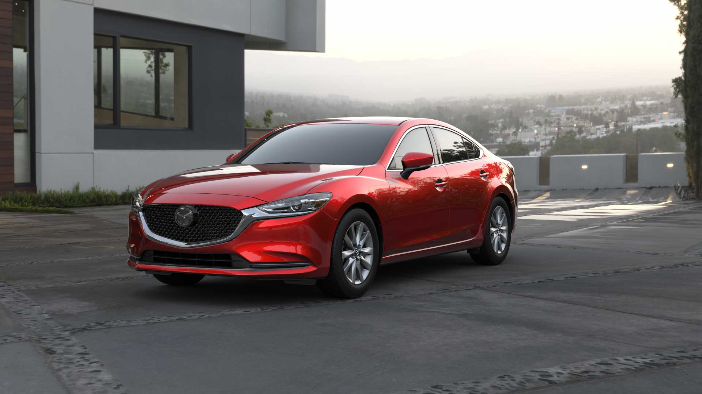
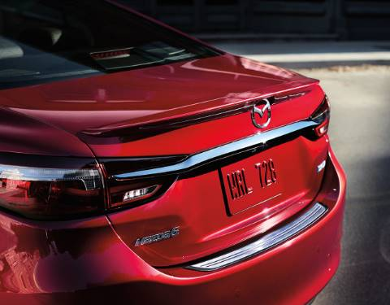
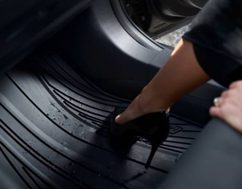
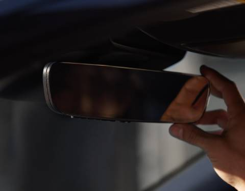
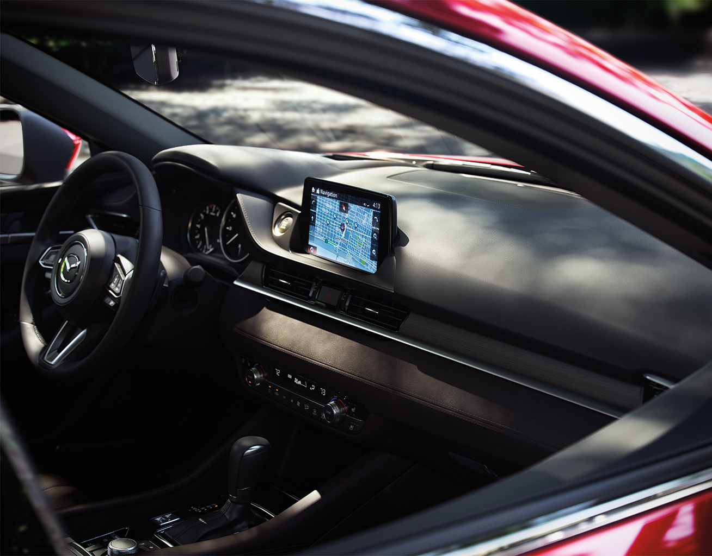
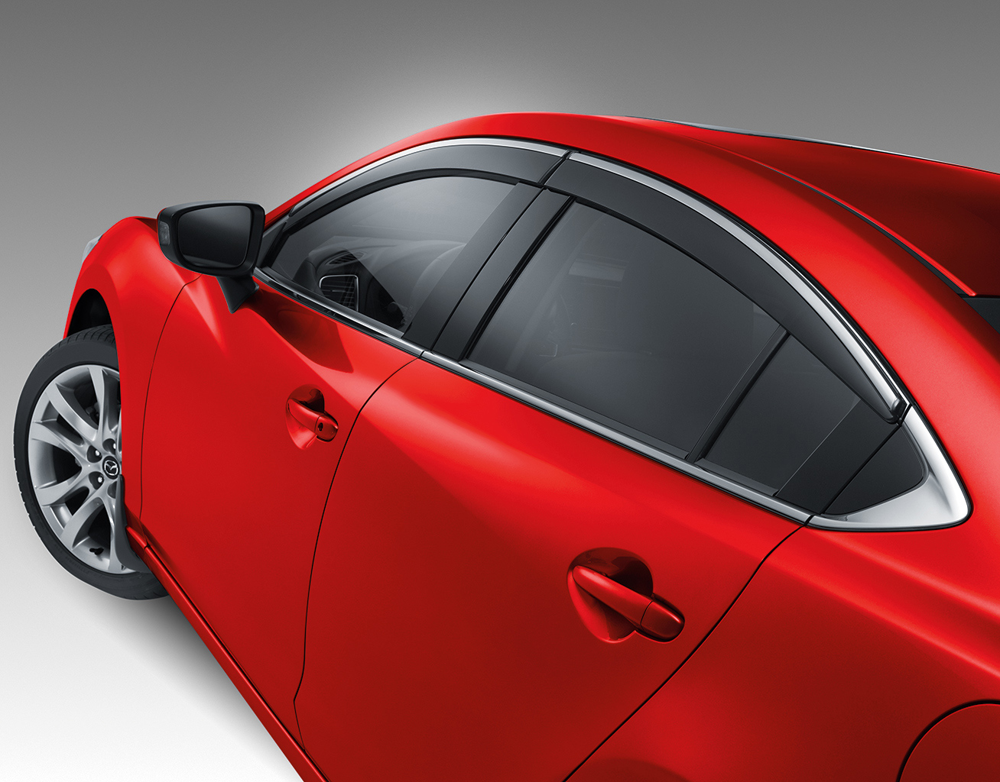
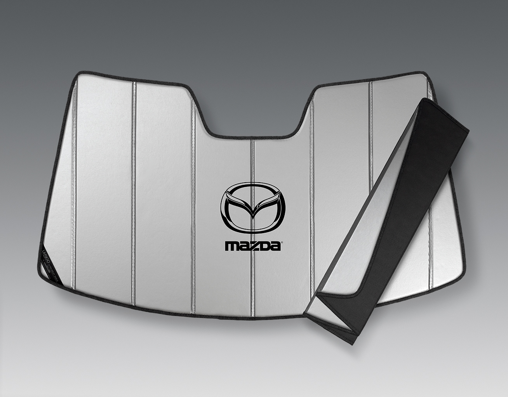
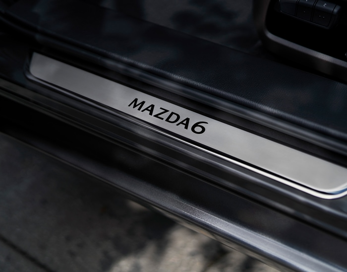
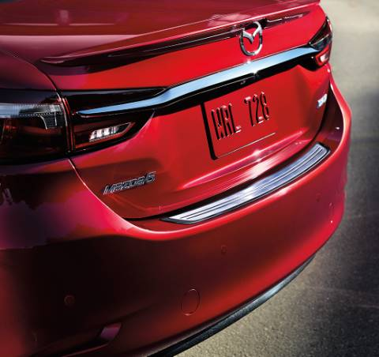

DISEÑOEl Mazda6 2021 está disponible solamente con transmisión AUTOMÁTICA. El Mazda6 2021 está disponible solamente con motor de GASOLINA. | |
PARACHOQUES TRASEROProtege tu parachoques trasero de muescas y rayones. Nuestro protector para parachoques trasero de acero inoxidable duradero te permite cargar y descargar tus equipos sin peligro. |
|
ALERON TRASERONo tiene nada de malo agregarle un poco de estilo a tu Mazda6. Este alerón trasero inspirado en las carreras le da un toque de personalidad al perfil aerodinámico de tu auto | |
Alfombras para toda estaciónProtege tu auto de las inclemencias del tiempo y de los derrames de líquidos o alimentos. Nuestras alfombras para todo tipo de clima están especialmente diseñadas para contener una buena cantidad de líquido, lo que permite limpiar |
|
Espejo retrovisor sin marco con atenuación automática y HomeLink®Con HomeLink®30 puedes programar la puerta del garaje, las puertas de entrada y las luces de seguridad para que funcionen al tocar un botón. Y el sistema de espejos inteligentes con diseño sin marco se ajusta automáticamente para reducir el |
|
Sistema de navegaciónLa tarjeta SD para navegación totalmente integrada de Mazda funciona a la perfección con el sistema de información y entretenimiento Mazda Connect™.42 Proporciona mapas, direcciones y mucho más en la pantalla táctil de tu auto. |
|
Deflectores en ventanas lateralesUn andar más silencioso, un ambiente más cómodo. Reduce el ruido del viento y deja las inclemencias del tiempo en el exterior mientras permites que ingrese aire fresco (juego de 4). |
|
Parabrisas con protección solarz Mantén fresco el interior de tu Mazda6 mientras está estacionado. Fabricado con material reflectante plateado e incluye el logo de Mazda. Se pliega como un acordeón. |
|
Placas de umbralelegantes placas de umbral. |
|
Sensores de estacionamiento, parte traseraUbicados discretamente dentro del parachoques, los sensores de estacionamiento traseros46 informan al conductor de las obstrucciones detrás del vehículo con una alarma sonora. |